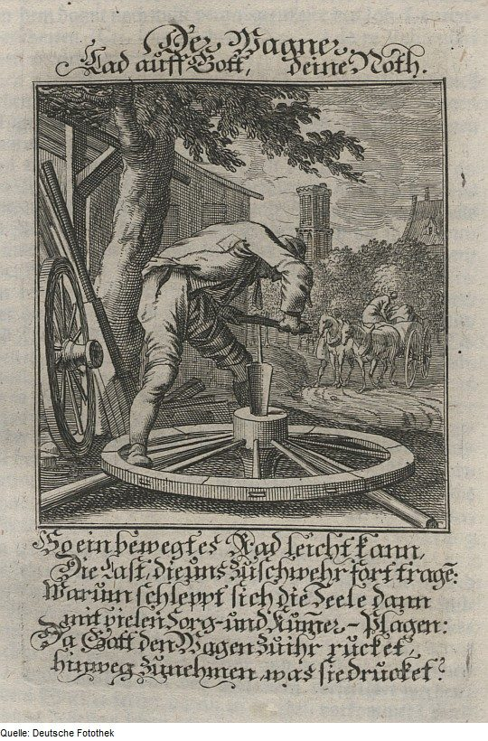
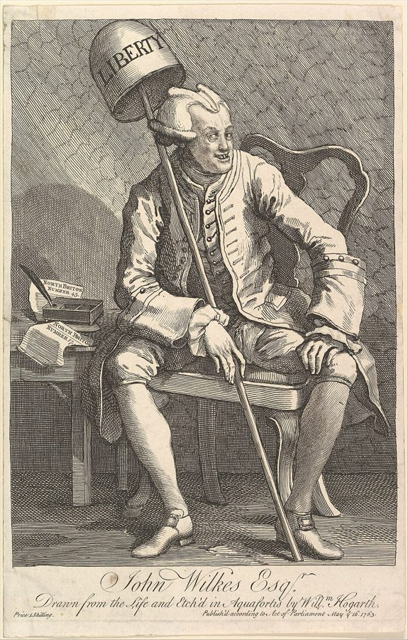

这一页在做什么
同一门手艺，为什么在这个城里挣得多，到了隔壁城里就挣得少？织麻布的为什么不能改织丝绸，穷人搬到邻村干活为什么会被赶回去？上一页讲的工资差别，前提是人人能自由进出各行；这一页斯密追究欧洲的法律和行会怎样拆掉了这个前提。他反对的是行会、学徒法和英格兰的定居法译本：「户籍法」，想说服的是相信这些规矩在保护手艺和秩序的人。读的时候抓两条线：每条规矩谁得利、谁付账；穷人有没有用自己双手的自由。

读之前：这一页在全书的哪里
上一页（第 10 章第一部分）停在三个条件：各行利弊要拉平，还得行当够老、时期正常、是主业。第 56 段一句话转弯：那些不平等在最完全的自由下也有；欧洲的政策不给完全自由，造成的不平等要紧得多。这一页就是第二部分。斯密在第 81 段预告，城里的资本怎样流回乡下、为什么违反「自然和理性的顺序」，留到卷三、卷四（页 14 起）；第 95 段说学校和大学的体制不合理，卷五（页 25）细说；第 118 段收尾，回指卷一第 7 章第 36 段（页 04）。
同一个地方、同一门手艺，法律怎样让有的人挣得多、有的人挣得少？多出来的那一份，是谁付的？
第 76 段斯密说「不必细算」：城里靠小本生意发大财的人，至少是乡下的一百倍，所以城里的行当更赚钱。这条证据只数了成功的人，Cannan 说论证不成立，见「本站怎么看」。
读的时候带着这几个问题。不用先找答案，读完回来对照「检查一下理解」。
- 长学徒期是为了保证手艺吗？斯密说什么东西比学徒法更让买主放心？§2
- 城里各行都抬价，彼此扯平了；那多付钱的是谁？§3
- 斯密说同行一聚会就合谋，他主张用法律禁止聚会吗？§4
- 一个穷人想搬到隔壁教区去干活，会碰到什么？§6§8
这一页的路线
斯密在第 57 段先列提纲：欧洲的政策用三种办法造成不平等，限制一些行当的竞争，增加另一些行当的竞争，挡住劳动和资本流动。三种办法篇幅很不均，第一种占了一半。他先摆事实（行会章程、学徒法，英格兰、法国、苏格兰各有多严），再连发几条反驳（侵犯穷人的财产、保不了质量、养不成勤劳、根本不必要），然后揭出真实目的：维持价格，于是转到城乡之间的一本账。读到第 78–79 段会觉得突然跳到了农夫有多聪明，第 81 段又去预告卷三，这是在补「城里占便宜」那条线。第 82 段的名句之后，他马上讲法律怎样别去方便聚会。第二种办法讲教会和文人，插进古希腊名师的学费。第三种办法从学徒法讲到定居法，第 101–112 段是条文史，可以直接跳到第 113 段。最后几段换了话题，讲法律定工资、定面包价，像收尾时顺手清点。
斯密落在哪：这些不平等不是市场自己长出来的，是法律造的：行会和学徒法替城里的手艺人挡住竞争，让乡下付账；助学金把教书的人挤穷；定居法把穷人困在教区里。法律该做的，是别替任何一方圈地。
分节地图
这一页是卷一第 10 章的第二部分，本站切成 8 节。粗体是本站起的节名；「杨译里找」后面是杨敬年译本里这一节开头附近的小标题或第一句，在电子书里搜它就能跳过去；灰色的英文是原文这一节开头的几个词。标「先读」的是最短读法，读完打个勾。
- 七年学徒和「铁匠大学」第二部分 由于欧洲的政策造成的不平等SUCH are the inequalities in the …第 57 段是全页提纲，先看清三种办法。随后摆事实：行会限学徒的人数和年限，学徒法把七年推成法律。第 64 段的马车匠最荒唐。
- 穷人的双手最神圣所有这类规定是既粗暴而又苛刻的The property which every man has …连着几条反驳。第 67 段是全页立场最鲜明的一段；第 71 段说钟表手艺几周、也许几天就教得会，还算了谁得谁失。
- 城里抱团，乡下吃亏建立同业公会，是用来维持价格，从而维持工资和利润的It is to prevent this reduction …行会的真实目的是维持价格。第 73 段城里各行互相抬价、彼此扯平，乡下付账；第 76 段的「百比一」要带着警惕读。
- 同行很少聚会城市产业的优越地位，由于其他法规而加强，例如对外国制造品课征高进口税The superiority which the industry of …第 82 段是全书名句，别只读前半句。第 83–85 段讲法律怎样方便了聚会，第 86 段说真正管住手艺人的是顾客。
- 穷书生挤低了教书的价钱（2）欧洲的政策增加了某些行业的竞争Secondly, The policy of Europe, by …好看在第 89 段副牧师挣得不如伦敦的鞋匠，第 94 段古希腊名师的学费和金像。第 95 段预告卷五对大学的批评。
- 织麻布的不许改织丝绸（3）欧洲的政策阻碍劳动的自由流通Thirdly, The policy of Europe, by …第三种办法：挡住流动。第 98 段同一个城里一行涨工资、一行只够糊口；第 100 段引出斯密所知英格兰独有的定居法。
- 定居法的条文史根据伊丽莎白第43年第2号法律，每个教区必须供养自己的穷人When by the destruction of monasteries …住满四十天、书面通知、教堂宣读、证书，一条条加码。细节繁琐，结论在第 113–114 段，可以直接跳过去。
- 跨不过的教区，雇主当顾问这项法律是英格兰劳动价格极不平等的原因The very unequal price of labour …第 113–114 段是定居法的后果和斯密少见的愤慨；第 116 段说立法者的顾问总是雇主。最后两段收尾，可略读。
先用中文过一遍：这一页的概念
先把这一页用到、斯密默认你懂的几个概念讲一遍。讲的是概念本身，斯密拿它推出什么，读原书时自己看。每个概念都有一句「今天」：今天的经济学怎么叫它、怎么看它。
§1同业公会（行会） corporation, incorporated trade
中世纪到 18 世纪，欧洲城里的手艺人和商人按行当结成团体，就是行会。拿到国王或市政当局的特许，一个行会就独占本城的这一行：不是会员，不许在城里开业。入会通常要先在本城跟一个够格的师傅当满学徒。行会的章程规定师傅能带几个学徒、学徒要当几年，也管质量、价格和会员之间的互助。英文叫 corporation，和今天的「公司」不是一回事，杨译作「同业公会」。斯密看行会，只盯着一件事：它限制了谁能进来。
今天：经济史家对行会争得很凶。Ogilvie 2019 年的书汇总欧洲近千年的证据，认为行会主要替会员和权贵分好处；Epstein 1998 年认为行会靠学徒制传手艺，自有用处。
在这一页：第 59–66 段讲行会的特权，第 72 段讲它的真实目的，第 85–86 段讲它怎样让限制比私下串通更持久。
§1进入壁垒 restraining the competition … to a smaller number
想进一行先要跨过的坎。坎越高，进来的人越少，留在里面的人越能把价钱和工资维持在高处。斯密分了两种。直接的：规定每个师傅只许带一两个学徒，名额就这么多。间接的：把学徒期拉到七年，几年不拿工钱、要家里供养，学费一高，肯来的人自然少；斯密说这一种「同样有效」。打个比方：一个城市的出租车牌照只发那么多张，开车再好学，没牌照也进不了这一行。坎不一定是为了挡人才设的，可只要它挡了人，行里的人就会想把它垫高。
今天：产业组织学的基本概念。执照、牌照、许可证都是进入壁垒；美国要执照才能干的工作，从 1950 年代约二十分之一涨到今天的四分之一以上，见「对照今天」。
在这一页：第 60 段把两种办法分开，第 61–66 段是各地的例子，第 71 段算了取消长学徒期以后谁得谁失。
§3寻租 to prevent the market from being over-stocked
不靠多生产，而靠争取规矩，把别人的钱挪进自己口袋。「租」借的是地租的意思：不用多干活就能多收的那一截。斯密笔下的城里正是这样：每个行当都想让自己的货在市面上「别太多」，其实就是总不够；每个行当也乐意别的行当照办。城里人互相买卖，大家都贵一点，扯平了；卖给乡下时，大家都多赚一截。乡下多付了钱，城里的人并没有多干什么。
今天：这个词是 Krueger 1974 年起的，Tullock 1967 年先讲了道理：争特权本身也要花钱，社会白白损失一截。斯密没用这个词，第 73–74 段是很好的前身。
在这一页：第 73–75 段。和页 05 讲的联合相通：城里人聚在一处，联合起来容易（第 77 段）。
§6劳动的自由流动 free circulation of labour
工人能从一行换到另一行、从一地搬到另一地，各处的工资才拉得平：哪里缺人、工资高，人就往哪里去，高的降下来，低的升上去。这正是上一页「利弊会拉平」暗含的前提。挡住流动，就会出现斯密说的局面：同一个城里，一行在扩张、工资很高，隔壁一行在衰落、只够糊口，两边帮不上彼此。斯密数了三道闸：学徒法挡住换行，行会挡住换城，英格兰的定居法连不要手艺的普通劳工也挡在教区边上。杨译作译本：「劳动的自由流通」。
今天：就叫劳动力流动。签证、执照跨州不认、户口，都是今天的闸；Clemens 2011 年汇总的估算说，放开国际迁移的收益，远大于拆掉剩下的全部贸易壁垒。
故事和背景
这一页里的人、事和 18 世纪的东西，按在书里出现的顺序排，标题前是节号。
§1帽匠的学徒名额，其实是便帽匠告的状
第 61 段列了一串学徒名额：设菲尔德的刀匠师傅一次只许带一个学徒；诺佛克和诺里奇的织匠师傅只许带两个，违者每月罚国王 5 镑；全英格兰和英属殖民地的帽匠师傅最多两个，罚款一半归国王，一半归告发的人。斯密说，这些虽然写进了全国的法律，用的还是行会那一套心思。Cannan 在注里补了一段内情：限制帽匠的那条伊丽莎白时代的法律，是做便帽（cap）的人哭诉大家都改戴礼帽（hat）、他们快活不下去了才求来的；1730 年代把限制推到美洲殖民地，Cannan 认为「无疑」出于英格兰帽匠对美洲同行的嫉妒。伦敦的丝织工成立公会才一年，就规定一人只许带两个学徒，最后要议会专门立法才废掉。Cannan 的注讲的却是另一个版本：那是捻丝工公会，1629 年成立，章程限的是纺锤数，快四十年后才去执行，议会废掉它时还规定章程不得把学徒限到三个以下。
§1「铁匠大学」和七年的文学硕士
第 62 段：这类团体古时候都叫 university，这本来就是拉丁文里任何社团的正式叫法，古城的旧特许状里常见「铁匠大学」「裁缝大学」。Cannan 引了一条旁证：罗马的布商公会就叫 universitas merciariorum。斯密接着说，后来专称「大学」的那种团体刚成立时，要读七年才拿得到文学硕士，这个年限「显然」是照手艺行的学徒期抄的：在够格的师傅手下干七年才能当师傅、收学徒；在够格的老师手下读七年，才能当 master、teacher 或 doctor，这三个词原来是一个意思，scholar 和 apprentice 也是。这是斯密的推断。卷五（页 25）他还会回来，拿大学当行会来批评。
§1马车匠不许自己造轮子

伊丽莎白第五年（1563 年）的《学徒法》规定：当时英格兰已有的手艺，不先当满七年学徒，谁也不许干。法院后来把它解释得很窄：只管集镇，不管乡村，因为村里人少，一个人得兼几门手艺；也只管 1563 年以前就有的行当。第 64 段的结果「蠢得不能再蠢」：判例说，马车匠不许自己造车轮，也不许雇帮工造，必须向车轮匠师傅买，因为车轮匠是老行当；车轮匠却可以造马车，因为 1563 年英格兰还没有马车匠这一行。曼彻斯特、伯明罕、伍尔弗汉普顿的许多新制造业，也因此不归这条法律管。Cannan 的注泼了点冷水：当时的法律汇编明写着「马车匠在这条法律之内」，斯密这个例子未必准。
§3六个梳毛工，一千个纺织工
第 77 段：城里人住在一处，容易联合；没有行会的行当，也常有那股「行会精神」：提防外人、不愿收学徒、不肯透露手艺的诀窍。人手越少的行当越容易串通。斯密说，「也许」只要六个梳毛工，就能让一千个纺工和织工有活干；他们约好不收学徒，就能独揽这门活，把整个毛纺业变成替他们干活的奴隶。第 78–79 段反过来夸乡下人：种地从来不用当学徒，可除了美术和高等职业，「或许」再没有哪一行需要这么多样的知识和经验；赶着一组马或牛犁地的人，要对付牲口的脾气、土的变化、天的变化，判断力一般远胜整天只做一两个简单动作的城里工匠。普通手艺，几页小册子配上图就讲得清，法国科学院正在出版的那套《工艺描述》就是这么做的。
§5副牧师挣得不如鞋匠帮工
第 89 段：许多人靠助学金读书当了神职人员，教会里挤满愿意少拿钱的人，斯密的话是「穷人的竞争夺走了富人的报酬」。他算了一笔账：14 世纪中叶以前，副牧师的年俸通常是 5 马克，银子约合斯密那时的 10 镑；同时期的泥瓦匠师傅一天 4 便士，约合斯密那时的 1 先令。要是常年有活，泥瓦匠挣得比副牧师多。安妮女王时的一条法律授权主教给副牧师定年俸，不高于 50 镑、不低于 20 镑；到斯密的时候，一年 40 镑就算很好的待遇，还有许多不到 20 镑。而伦敦有的鞋匠帮工一年挣 40 镑。斯密顺手讽刺：法律想压低工人的工资、抬高副牧师的薪水，两头都没做到。
§5伊索克拉底的学费，高尔吉亚的金像
第 93 段：印刷术发明以前，学者和乞丐「似乎」几乎是同义词，大学校长还给学生发过乞讨许可。古代没有这类助学金，名师「似乎」挣得多得多。伊索克拉底在《驳智者》里嘲笑同行：许诺教人明智、幸福、正直，却只收四五个迈纳。他自己每个学生收 10 迈纳，据说一期有一百个学生，斯密算出一期课收入 3333 镑 6 先令 8 便士，够伦敦一个年挣 40 镑的鞋匠帮工干八十多年。高尔吉亚（杨译「乔治阿斯」）给德尔斐神庙献了一尊自己的纯金像，斯密补了一句：我想我们不该以为它和真人一样大。Cannan 的注说，更早的记载说金像是全希腊人立的；斯密还弄混了人：巴比伦出身的是第欧根尼，不是卡涅阿德斯。
§7住满四十天：定居法
修道院被解散、穷人没了施舍以后，伊丽莎白第 43 年（1601 年）的济贫法让每个教区自己养自己的穷人，钱从教区税里出。于是「谁算本教区的穷人」成了要紧事。1662 年的法律定下：在一个教区安稳住满四十天，就取得定居权；四十天内，教区可以请两名治安推事把新来的人遣回原籍，除非他租得起年租 10 镑的房子，或者拿得出担保。后来一条条加码：要交书面通知，要在礼拜天礼拜之后当众宣读。伯恩说，这样取得定居权的「极少」。再后来发明了证书：原教区出证明，担保这人将来要领救济时由它负责。Cannan 提醒，斯密讲的条文不错，但把立法者的思路颠倒了：最早那条法律的序言，抱怨的是穷人往家底最厚的教区跑。
§8威尔克斯和一般搜查令

第 114 段拿定居法和一件轰动一时的事对比。1763 年，议员 John Wilkes 在他办的《北不列颠人》第 45 期上抨击国王的演说。国务大臣签发了一张「一般搜查令」：不写名字，只说抓这期报纸的作者、印刷者和出版者，前后抓了四十多人，Wilkes 也在其中。他起诉官员，法院在 1763 到 1765 年间的几个判决里认定这种不点名的搜查令违法，「威尔克斯与自由」成了街头口号。斯密说：一般搜查令确实是滥权，可它不大可能压到很多人头上；定居法压了全英格兰的穷人一百多年，却从没引起过这样的公愤。
原典：斯密的原话
这本书是公版书，下面几段整段放斯密的原文，配本站的白话译。原文后面的灰字告诉你它在杨译里的哪个小标题附近，可以对照着读；最后一行是这段里今天容易读错的 18 世纪词。
§2穷人的双手是最神圣的财产
全页立场最鲜明的一段：斯密说的自由，首先是穷人用自己双手的自由。在杨译所有这类规定是既粗暴而又苛刻的那个小标题附近。
The property which every man has in his own labour, as it is the original foundation of all other property, so it is the most sacred and inviolable. The patrimony of a poor man lies in the strength and dexterity of his hands; and to hinder him from employing this strength and dexterity in what manner he thinks proper without injury to his neighbour, is a plain violation of this most sacred property. It is a manifest encroachment upon the just liberty both of the workman, and of those who might be disposed to employ him. As it hinders the one from working at what he thinks proper, so it hinders the others from employing whom they think proper. To judge whether he is fit to be employed, may surely be trusted to the discretion of the employers whose interest it so much concerns. The affected anxiety of the law-giver lest they should employ an improper person, is evidently as impertinent as it is oppressive.
本站译：每个人对自己的劳动拥有的那份所有权，既然是其他一切财产的原始基础，也就是最神圣、最不可侵犯的。一个穷人祖传的家业，就在他双手的力气和灵巧里；他只要不伤害邻人，想怎么用这份力气和灵巧就该怎么用，不许他用，就是明明白白地侵犯这份最神圣的财产。这明摆着侵犯了工人的正当自由，也侵犯了可能愿意雇他的那些人的正当自由：一边不许他干自己认为合适的活，一边不许他们雇自己认为合适的人。他够不够格被雇，尽可以放心交给雇主自己去判断，这事和他们的利益关系太大了。立法者装出一副生怕雇主雇错人的焦虑，显然既多管闲事，又欺压人。
「劳动是一切财产的基础」是自然法学派的说法。Cannan 提醒，斯密在格拉斯哥的法学讲义里讲财产的起源，讲的是另一套；别把这一句当成他财产理论的全貌。
- patrimony祖传的家业、继承来的产业
- encroachment侵占、越界
- affected装出来的，不是「受影响的」
- impertinent多管闲事的、不相干的，不只是「无礼」
§3城里扯平了，乡下付账
寻租最早、最清楚的描述之一：每个行当都抬价，彼此扯平，账记在城外。在杨译所有的是牺牲乡村以使城市得利的方法那个小标题附近。
The government of towns corporate was altogether in the hands of traders and artificers; and it was the manifest interest of every particular class of them, to prevent the market from being over-stocked, as they commonly express it, with their own particular species of industry; which is in reality to keep it always under-stocked. Each class was eager to establish regulations proper for this purpose, and, provided it was allowed to do so, was willing to consent that every other class should do the same. In consequence of such regulations, indeed, each class was obliged to buy the goods they had occasion for from every other within the town, somewhat dearer than they otherwise might have done. But in recompence, they were enabled to sell their own just as much dearer; so that so far it was as broad as long, as they say; and in the dealings of the different classes within the town with one another, none of them were losers by these regulations. But in their dealings with the country they were all great gainers; and in these latter dealings consists the whole trade which supports and enriches every town.
本站译：自治市镇的管理权，完全握在商人和手艺人手里。他们每一个行当都明摆着有这样一种利益：照他们自己常说的，别让市面上自己这一类产品「太多」，说穿了就是让它总不够。每个行当都急着订出这样的规章，只要自己获准这么做，也乐意让别的每个行当照办。有了这些规章，每个行当向城里别的行当买自己要用的东西，确实都比本来贵了一些。可作为补偿，他们卖自己的东西也正好贵了这么多；所以就像俗话说的，长宽一样，扯平了；城里各行当之间互相买卖，谁也没因为这些规章吃亏。可在和乡下的买卖里，他们个个都是大赢家；而养活一座城、让它富起来的全部贸易，就是和乡下的这些买卖。
下一段接着算账：城里用来换乡下粮食和原料的，是制成品；制成品里的工资和利润一抬高，城里就能用较少的劳动换走乡下较多的劳动。
- towns corporate有自治特许状的市镇，corporate 不是「公司的」
- over-stocked供过于求、存货太多
- as broad as long长宽一样，俗话，意思是扯平了、半斤八两
- the country乡下、农村，不是「国家」
§4同行很少聚会
全书名句。后半段「法律禁不了，但别去方便」常被省掉，这里连着后面几段一起放。在杨译同一行业的人的集会，不应予以促进那个小标题附近。
People of the same trade seldom meet together, even for merriment and diversion, but the conversation ends in a conspiracy against the public, or in some contrivance to raise prices. It is impossible indeed to prevent such meetings, by any law which either could be executed, or would be consistent with liberty and justice. But though the law cannot hinder people of the same trade from sometimes assembling together, it ought to do nothing to facilitate such assemblies; much less to render them necessary. A regulation which obliges all those of the same trade in a particular town to enter their names and places of abode in a public register, facilitates such assemblies. … A regulation which enables those of the same trade to tax themselves in order to provide for their poor, their sick, their widows and orphans, by giving them a common interest to manage, renders such assemblies necessary. An incorporation not only renders them necessary, but makes the act of the majority binding upon the whole. In a free trade an effectual combination cannot be established but by the unanimous consent of every single trader, and it cannot last longer than every single trader continues of the same mind.
本站译：干同一行的人很少聚在一起，哪怕只是为了说笑消遣，可聊到最后，总会变成一场对付公众的密谋，或者某个抬高价格的盘算。要用法律来阻止这种聚会，确实办不到：这样的法律，要么执行不了，要么和自由、公正相抵触。不过，法律虽然拦不住同行偶尔聚一聚，却不该做任何事去方便这种聚会，更不该让它变得非开不可。一条规章要某个城里所有干这一行的人，把姓名和住址登进公开的名册，就方便了这种聚会。……一条规章允许同行向自己收钱，好接济本行的穷人、病人、寡妇和孤儿，就给了他们一笔要一起打理的共同利益，聚会就非开不可了。一个行会不但让聚会非开不可，还让多数人的决定约束全体。在一个自由的行当里，要结成有效的联合，非得每一个商人一致同意不可，而且只能维持到每一个商人都还没改主意的时候。
斯密的结论是制度上的：禁不了，但法律别去帮忙。登记名册让陌生人找得到彼此，共同基金给了开会的理由，行会的多数决让少数人没法单独降价。省略处说的是，名册让每个同行都知道去哪儿找别人。
- trade行当、行业，不是贸易
- merriment and diversion说笑、消遣
- contrivance盘算、花招
- combination联合、串通，见页 05
§8四十岁的穷人，人人受过定居法的压迫
斯密少见的愤慨，也是看他怎么用「天然自由」这个词的好地方。在杨译这项法律是对天赋自由的公然违反，虽然人们甘心忍受那个小标题附近。
To remove a man who has committed no misdemeanour from the parish where he chuses to reside, is an evident violation of natural liberty and justice. The common people of England, however, so jealous of their liberty, but like the common people of most other countries never rightly understanding wherein it consists, have now for more than a century together suffered themselves to be exposed to this oppression without a remedy. Though men of reflection too have sometimes complained of the law of settlements as a public grievance; yet it has never been the object of any general popular clamour, such as that against general warrants, an abusive practice undoubtedly, but such a one as was not likely to occasion any general oppression. There is scarce a poor man in England of forty years of age, I will venture to say, who has not in some part of his life felt himself most cruelly oppressed by this ill-contrived law of settlements.
本站译：一个人没犯任何过错，却把他从自己选定居住的教区赶走，这明显违反天然的自由和公正。可英格兰的老百姓，虽然那么警惕地守护自己的自由，却和多数国家的老百姓一样，从来没真正弄明白自由到底在哪里；一百多年来，他们就这样任由自己受这种压迫，没有补救。有见识的人虽然有时也抱怨定居法是一桩公害，它却从来没有激起过普遍的民众抗议，不像一般搜查令那样：那无疑是一种滥权，可它不大会造成普遍的压迫。我敢说，英格兰年满四十的穷人里，几乎没有一个，不曾在一生的某个时候被这部设计拙劣的定居法残酷地压迫过。
「我敢说」是斯密自己挂的口气，没给证据。Cannan 的注说，要是拿点证据出来会更好，还指出 Eden 1797 年持相反看法，见「对照今天」。杨译这段有两处要留意，见「译本勘误」。
- misdemeanour轻罪、过错
- jealous of警惕地守护（自己的东西），不是嫉妒或羡慕
- general warrants不写名字、只写罪名的搜查令和逮捕令
- ill-contrived设计拙劣的
§8立法者的顾问总是雇主
常被忽略的一段：说斯密只替商人说话的人，最好读读它。在杨译伦敦裁缝的工资仍由法律规定那个小标题附近。
Whenever the legislature attempts to regulate the differences between masters and their workmen, its counsellors are always the masters. When the regulation, therefore, is in favour of the workmen, it is always just and equitable; but it is sometimes otherwise when in favour of the masters. Thus the law which obliges the masters in several different trades to pay their workmen in money and not in goods, is quite just and equitable. It imposes no real hardship upon the masters. It only obliges them to pay that value in money, which they pretended to pay, but did not always really pay, in goods. This law is in favour of the workmen; but the 8th of George III. is in favour of the masters. When masters combine together in order to reduce the wages of their workmen, they commonly enter into a private bond or agreement, not to give more than a certain wage under a certain penalty. Were the workmen to enter into a contrary combination of the same kind, not to accept of a certain wage under a certain penalty, the law would punish them very severely; and if it dealt impartially, it would treat the masters in the same manner.
本站译：每当立法机关想调解雇主和工人之间的纠纷，给它出主意的总是雇主。所以，规章对工人有利的时候，它总是公正合理的；对雇主有利的时候，有时就不是了。比如，有一条法律要求好几个行当的雇主用钱、不用实物给工人发工资，这就完全公正合理。它没让雇主真吃什么亏，只是要他们把那份价值改用钱来付：他们本来就声称用实物付了这份价值，实际上却不总是付足。这条法律对工人有利；可乔治三世第八年那条法律对雇主有利。雇主们联合起来压低工人的工资时，通常会私下立一份契约或协议，约好谁也不付超过某个数的工资，违者受罚。要是工人们订一个性质相同、方向相反的联合，约好低于某个数的工资谁也不接，违者受罚，法律就会极严厉地惩罚他们；法律要是不偏不倚，就该用同样的办法对待雇主。
第二句的逻辑：顾问既然是雇主，连他们都点头的利工人的规章，必定公道。「有时」是斯密的原话，不是「一律」。乔治三世第八年（1768 年）那条法律，给伦敦裁缝帮工定了每天 2 先令 7 便士半的工资上限。
- counsellors出主意的人、顾问
- in goods用实物（常是雇主自家铺子的货）抵工资，后来叫 truck
- bond带罚则的契约
- equitable公道的、合乎情理的
译本勘误
杨译这一章整体可靠。下面只收会把人读歪的几处。灰字是英文原文那一处的几个词；方框里是杨译的原句，在电子书里搜它。
§1police 是治理，不是「公安」术语
… considered as rules of police, appear …
译本：「这些区别从公安规则的角度来看」
police 在 18 世纪指一国的内政管理、公共规章，和警察无关。斯密说的是：拿这些区别当治国的规矩看，蠢得不能再蠢。第 100 段 the police of England 杨译作「乱政」，意思大致通，指英格兰的内政。
§5是伊索克拉底，不是苏格拉底误译
… Isocrates, in what is called his …
译本：「苏格拉底在所谓他和诡辩家的对话中」
原文是伊索克拉底的演说《驳智者》。杨译整段都写成苏格拉底，连收 10 迈纳、一期一百个学生也安到了他头上，两条译注也跟着错。苏格拉底恰恰以不收学费出名，照杨译读，会以为斯密说他开价讲课。
§5「或许利大于弊」，不是「不但无害」漏译
… perhaps, rather advantageous than hurtful …
译本：「这种不平等对于公众不但无害，而且有利」
原文挂着 perhaps，说的是整体看「或许利多于弊」：教书的行当是掉了点身价，但读书便宜是大好处。杨译丢了「或许」，又把「利多于弊」说成「毫无害处」，斯密的话被说绝了。同处的小标题倒保留了「或许」。
§7担保的是新教区不吃亏误译
… security for the discharge of the …
译本：「担保他放弃原居住教区的户籍」
原文是：新来的人要拿出担保，让他现住的教区「免于负担」，即将来他要领救济，不用这个教区出钱。和放弃原来的定居权无关。第 109 段同一个说法，杨译作「以保证取消原教区的户籍」，也是同样的问题。
§7chargeable 是要领救济，不是「被起诉」误译
… upon his becoming actually chargeable …
译本：「而只在他实际上被起诉时才能令他离去」
chargeable 指成了教区的负担，要靠教区救济。证书的要点是：持证的人不能因为「将来可能要领救济」就被赶走，只有真要领了，才能遣返，费用由原教区出。杨译成「被起诉」，整个证书制度就读不通了。第 111 段伯恩的话里也有同样的误译。
§8违反的是天然自由，不是「平等」误译
… violation of natural liberty and justice …
译本：「显然违反自然平等和公正」
原文是 natural liberty，天然的自由，这是全段的关键词：下一句讽刺英格兰人最在乎自由，却看不出定居法侵犯了自由。同一处的小标题杨译作「天赋自由」，正文却成了「平等」，前后对不上。
§8jealous of their liberty 是珍视自由误译
… so jealous of their liberty, but …
译本：「英格兰的普通人民虽然羡慕自由」
jealous of 自己的东西，是警惕地守护、生怕被人夺走，不是羡慕别人有。英格兰人是出了名地珍视自己的自由，斯密的讽刺正在这里；读成「羡慕」，好像他们本来没有自由。
§8四百多年，不是四十多年数字
… experience of above four hundred years …
译本：「根据四十多年的经验」
原文是四百多年：从中世纪起，英格兰就一直想用法律定工资。同一句伯恩的话，杨译还丢了条件「要是同一种活的人都拿一样的工资」，后半句就读不通了；杨译自己的注里补了这半句。
§8「有时」不公正，不是一律不公正漏译
… it is sometimes otherwise when …
译本：「当其于雇主有利时，则不是这样」
原文有 sometimes：利雇主的规章「有时」不公正。杨译丢了这个词，成了凡是利雇主的规章都不公正，斯密的判断被说过了头。
读完：斯密到底说了什么
读完原书再看。下面把这一页的论点按逻辑重排，每条后面标着依据在哪几段，以及今天怎么看（理由在「对照今天」和「本站怎么看」）。
行会和学徒法限制入行，真实目的是维持价格，不是保证手艺
限学徒名额是直接挡人，拉长学徒期是靠抬高学费间接挡人。长学徒期防不了劣货（劣货多出于欺诈，靠印记防），养不成勤劳，也没必要：普通手艺几天就教得会。取消它，师傅吃亏，学成的工人「也许」也吃亏，公众得利。
§1 §2 第 60–72 段这些规章让城里从乡下多拿一份年产物
城里各行互相抬价、彼此扯平，卖给乡下时都多赚；高关税又挡住外国人。城里人聚居好联合，乡下人分散，又被商人的说辞说服，很少反对。斯密拿「城里发财的人多一百倍」作证据，这一条站不住。
§3 §4 第 73–80 段同行一聚会就易合谋；法律禁不了，但不该去方便它
禁止聚会的法律要么执行不了，要么违背自由和公正。法律该做的是别强制登记、别给同行一笔要共同打理的钱、别让行会的多数决约束全体。管住手艺人的应当是怕丢生意。
§4 第 82–86 段学徒法、行会和定居法挡住流动，造成相邻地方工资悬殊
工人换不了行、换不了城，一行涨工资、一行只够糊口。英格兰的定居法「或许」是内政里最大的弊病，有家室的穷人没有证书，在多数教区都会被赶回原教区，工资差别「大概」由此而来。赶走没犯错的人，违反天然的自由。
§6–§8 第 96–114 段法律调解劳资时，听的是雇主的
伦敦裁缝的工资上限，等于用法律替雇主执行他们私下串通想做的事；工人若联合约定最低工资，就会受重罚。利工人的规章总是公道的，利雇主的有时不公道。
§8 第 115–116 段合起来：上一页说工资差别多是补偿；这一页说，补偿解释不了的那一大块，是法律造的。行会、学徒法、助学金和定居法，每一条都替一些人挡住竞争，让另一些人付账。斯密要的是把这些闸拆掉，不是让法律站到另一边去。
对照今天
这一页里能拿后来的研究和数据检验的说法。每张卡判的是标题里「书里的说法：」后面那一句。
- 成立今天的经济学和证据支持这句话。
- 部分成立大方向对，细节或适用范围要改。
- 过时说的是 18 世纪的世界，当时也许对，今天的制度和技术已经变了。
- 被推翻后来的经济学或证据说明它错了。
- 有争议经济学界至今没有定论，两边各有代表性的研究。
书里的说法：入行的门槛主要是在限制竞争、抬高行内收入，不是在保证手艺
- 书里
- 第 60 段、第 68–72 段：限名额、拉长学徒期都为挡人；防劣货靠银器上的纯度标记和布上的印记。
- 当时
- 斯密自己说宽严各地不一：苏格兰交一点罚金就能缩短学徒期，英格兰的学徒法只管集镇和 1563 年以前就有的行当。
- 今天
- 学徒期的现代版是执照。美国要执照才能干的工作，1950 年代约占二十分之一，2015 年白宫的报告说已超过四分之一。门槛常和风险不相称：主张放松管制的美国司法研究所 2012 年统计，美容师平均要培训 372 天，急救员只要 33 天。执照抬高工资的研究见页 07。核对于 2026-10。依据：美国财政部、经济顾问委员会、劳工部 Occupational Licensing: A Framework for Policymakers, 2015；Institute for Justice, License to Work, 2012。
- 另一边
- Epstein 1998 年认为，行会的学徒制确实在传授能带走的手艺。Brookings 的一篇评述承认多数研究找不到执照提高质量的证据，但指出，研究给原本没人管的医疗行业首次设执照时，看到了质量改善。依据：Epstein, Journal of Economic History, 1998；Brookings, What explains occupational licensing?
书里的说法：同行聚到一起，常常就在合谋抬价
- 书里
- 第 82 段；第 83–85 段讲登记名册、互助基金和行会怎样方便了聚会。
- 当时
- 还没有反垄断法。斯密不主张禁止聚会，认为这样的法律要么执行不了，要么违背自由。
- 今天
- 被抓到的卡特尔一再印证这句话。1990 年代的赖氨酸卡特尔，以「行业协会」开会为掩护定价、分市场，FBI 偷录了会议，ADM 认罪，罚款 1 亿美元；1999 年的维生素卡特尔，罗氏一家就罚了 5 亿美元。新的担心是不见面也能合谋：美国司法部 2024 年起诉房租定价软件 RealPage，说它让房东共享数据、一起抬租金，2025 年 11 月提出和解，RealPage 不认错。核对于 2026-10。依据：美国司法部关于赖氨酸案和 1999 年维生素案的公告；美国司法部 RealPage 案诉状与和解。
书里的说法：定居法让英格兰的穷人很难跨教区谋生，造成相邻地方工资悬殊
- 书里
- 第 113–114 段：工资差别「大概」由此而来；四十岁的穷人几乎人人受过它的压迫，斯密说「我敢说」。
- 当时
- 斯密没给证据。Cannan 的注指出，Eden 1797 年的《穷人的状况》持相反看法，认为 Hay 1735 年那种说法夸大了。1795 年起，法律不许在人真要领救济以前就遣返他。
- 今天
- 一边：Landau 1990 年等研究发现，教区官员确实拿定居法挑选、管控外来的穷人。另一边：Solar 1995 年、R. M. Smith 2008 年认为，定居权给了外出打工的人一份「老家兜底」的救济权，反倒让人敢走；Boyer 的综述说，教区遣返是有选择的，挡的多是单身女人、老人和孩子多的人家。核对于 2026-10。依据：Landau, Historical Journal, 1990；Solar, Economic History Review, 1995；Boyer, EH.Net 百科「English Poor Laws」。
书里的说法：立法调解劳资时听的是雇主的，法律罚工人联合、不罚雇主联合
- 书里
- 第 116 段，以伦敦裁缝的工资上限为例。
- 当时
- Cannan 的注说，那条裁缝法最早的版本（乔治一世第七年）序言里，控诉的正是裁缝帮工「联合」要求涨工资、少干活。
- 今天
- 斯密身后，英国先是更严：1799、1800 年的《结社法》禁止一切工人联合，1824 年才废除；1871 年的《工会法》让工会合法。学徒法里管工资和学徒的条款 1813–1814 年废除，1835 年的《市政机关法》让人人都能在市镇里开店营业。今天多数国家的劳动法保护工人组织工会，雇主之间串通压工资归反垄断法管（见页 05）。核对于 2026-10。依据：Britannica「Combination Acts」；Trade Union Act 1871；Municipal Corporations Act 1835 条文。
书里的说法：要不是行会法，乡下劳动者的地位和工资大概处处都会高过城里的工匠
- 书里
- 第 79 段：中国和印度「据说」就是这样；斯密用的是「大概」。
- 当时
- 斯密的根据是农活更需要判断，加上关于中国、印度的传闻。
- 今天
- 英格兰市镇只许会员营业的特权，1835 年就废了，城里的工资照样高。Glaeser 和 Maré 2001 年估计，美国城市工人的工资比非城市的高约三分之一，而且大半是在城里干久了慢慢涨出来的：城市让人学得快。农活需要判断，这一半不必推翻；推翻的是「没有行会，乡下就挣得多」这个预测。核对于 2026-10。依据：Glaeser & Maré, Cities and Skills, Journal of Labor Economics, 2001。
本站怎么看
这一页最值得争的几个问题。每块先摆主流看法，再摆斯密在书里怎么说，最后是本站的评论。
斯密替谁说话
主流看法：大众印象里，斯密是自由市场和商界的代言人。研究思想史的人多半不这么读，Rothschild 2001 年的《经济情操》就强调，斯密在意的是普通人不受行会、学徒法这类规矩的欺压。
斯密的看法：第 67 段把穷人的双手称作最神圣的财产；第 80 段说商人和制造业者的「吵嚷和诡辩」骗过了乡下人；第 116 段说立法者的顾问总是雇主。可第 71 段他也算过：取消长学徒期，学成的工人自己大概也会吃亏，他照样主张取消。
本站的评论：这一页给的答案是：他不替哪一方说话，他反对的是用法律给自己圈地，不管圈地的是行会师傅、城里商人，还是想压工资的雇主。今天给他贴「亲商」或「亲劳工」的标签，都漏掉一半。也要看到他的盲点：第 77 段他明明看见工人也会圈地，六个梳毛工约好不收学徒就能卡住整个毛纺业；第 116 段却说利工人的规章「总是」公道的，等于给了工人一张空白支票。
行会和执照：门槛该不该有
主流看法：经济史家对行会争论不休：Ogilvie 2019 年汇总欧洲近千年的证据，认为行会主要替会员和给它特权的权贵谋利；Epstein 1998 年认为行会靠学徒制传手艺、帮了技术进步。今天的执照也分两边，见「对照今天」第一张卡。
斯密的看法：第 68 段：防劣货要靠印记，不靠学徒期；第 86 段：真正管住手艺人的不是行会，而是顾客，怕丢了生意；在许多有行会的大城里找不到像样的工人，要把活拿到郊区去做，再想法偷运进城。
本站的评论：对一般手艺，斯密几乎全对：理发、做鞋、装修，顾客看得出好坏，门槛主要护着行内人。他的药方在顾客看不出好坏时就不够用：病人分不清好医生和庸医，等发现已经晚了。今天的评分、认证、保险，可以看作「印记」的现代版。问题从来不是要不要门槛，而是门槛由谁定、护着谁。
「百比一」证明了什么
主流看法：只看活下来的成功者、不看失败者，统计上叫幸存者偏差。Cannan 1904 年在注里就说第 76 段的论证不成立：斯密没有证明，城里那么多成功，没被同样多的失败抵消。
斯密的看法：第 76 段：不必细算，城里靠小本生意发大财的人，至少是乡下的一百倍，所以城里的工资和利润显然更高，资本和劳动自然往城里跑。
本站的评论：巧的是，上一页第 36 段斯密犯了方向相反的错：说走私是必然的破产之路，只数了破产的。两次都是拿显眼的例子代替平均数。他的结论未必错，第 73–75 段的推理自己站得住；只是这条「简单明显」的证据撑不起它。今天看到「某行出了多少富豪」，先问一句：进去的一共有多少人。
本站的总体看法：这是全书里斯密最像改革者的一页：他追究的不是市场，而是替一部分人挡住市场的法律。行会和定居法早已不在，执照、户口、行业协会还在，他的问法照样好用：这道门槛挡住了谁，谁付账。要打折扣的是证据，「百比一」和「人人受过压迫」都说过了头。
检查一下理解
先在心里答，再点开。答错的那题，回书里把对应那一节再读一遍。
1.（§1）斯密说行会限制入行有两种办法，各是什么？
直接的：限每个师傅能带的学徒人数。间接的：拉长学徒期，学费一高，肯来的人就少，斯密说同样有效。
2.（§2）斯密凭什么说长学徒期保证不了质量？
劣货多半出于欺诈，不是手艺不行，学多久也防不了欺诈。银器的纯度标记、布上的印记更让买主放心，买主从不问工人当没当满七年。
3.（§3）城里各行互相抬价，为什么彼此谁也不吃亏？吃亏的是谁？
买别人的东西贵一点，卖自己的也贵这么多，扯平了。吃亏的是乡下的地主、农场主和劳工：他们要拿更多的产物，换城里的制成品。
4.（§4）斯密主张用法律禁止同行聚会吗？
不。这样的法律要么执行不了，要么违背自由和公正。他只要法律别去方便聚会、别让它非开不可，比如别强制登记，别设同业基金，别让行会的多数决约束全体。
5.（§5）副牧师受的教育又长又贵，为什么挣得还不如伦敦的鞋匠帮工？
许多神职人员靠助学金读书，教会里挤满愿意少拿钱的人，穷人的竞争夺走了富人的报酬。法律想抬高副牧师的薪水，也没抬上去。
6.（§6 §8）为什么英格兰相邻的地方工资会突然差一大截，苏格兰却不会？
定居法让穷人，尤其是有家室的，没有证书就会被遣回原教区，人多的教区补不了缺人的教区。苏格兰没有这种障碍，工资只随离大城远近慢慢变。
7.（§8）伦敦裁缝的工资法，为什么在斯密看来偏袒雇主？
它定的是工资上限，等于用法律替雇主执行他们私下串通想做的事；工人要是联合约定最低工资，却会受重罚。
用一句话写下：斯密在这几章反对谁、主张什么，今天还成不成立。
想一想：你干过或想干的工作，要不要证书、执照、户口或者签证才能干？要是明天这道门槛取消了，你会觉得高兴，还是担心？担心的是什么？
精彩回顾
隔几周回来时看这里。想不起来，点节号回到那一节。
一句话：工资和利润的差别里，有一大块是法律造的：行会、学徒法和定居法替一些人挡住竞争，让另一些人付账。
学徒法只管 1563 年前就有的行当，于是马车匠得向车轮匠买轮子，车轮匠却能造马车。斯密说这蠢得不能再蠢。
§1穷人的家业就是双手的力气和灵巧，不许他随意使用，就是侵犯最神圣的财产。
§2城里各行互相抬价，彼此扯平；卖给乡下时个个都是大赢家。这是寻租最早的描述之一。
§3一聚就容易合谋抬价。可斯密不主张禁止，只要法律别去方便它、更别让它非开不可。
§4伊索克拉底一个学生收 10 迈纳，据说一期一百人。杨译把他错成了苏格拉底。
§5在英格兰，穷人跨过一道人为的教区边界，常常比跨过海湾和山脉还难，相邻地方的工资因此差一大截。
§8